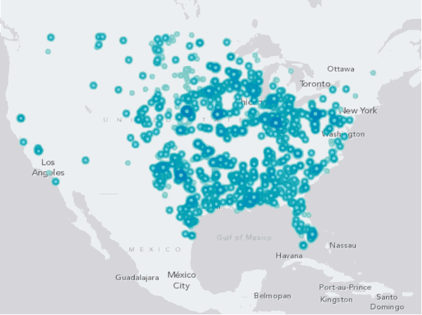
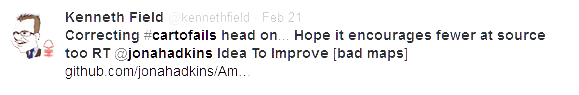
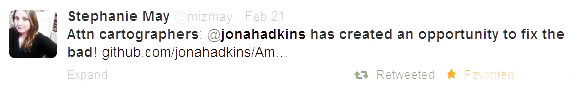
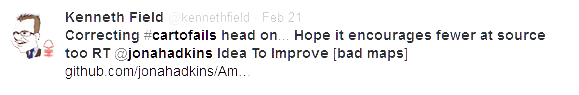
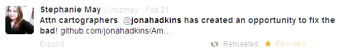

Amazing-er Maps!
Making Social Maps Better
There's a lot of bad unique maps out there
The Idea:
to improve, to give people a forum to show how they might display the same information.
What It's Not:
a jab at the original map maker. It’s a way for anyone to see a map and improve it based on their knowledge field of expertise
We Have The Technology
Real Simple
- See a map on the internet
- find and open the data source
- create and share the new map
It's All On GitHub
github.com/jonahadkins/Amazing-Er-Maps
Fork Examples!
Tutorials!
What [gis] People Are Saying
 


